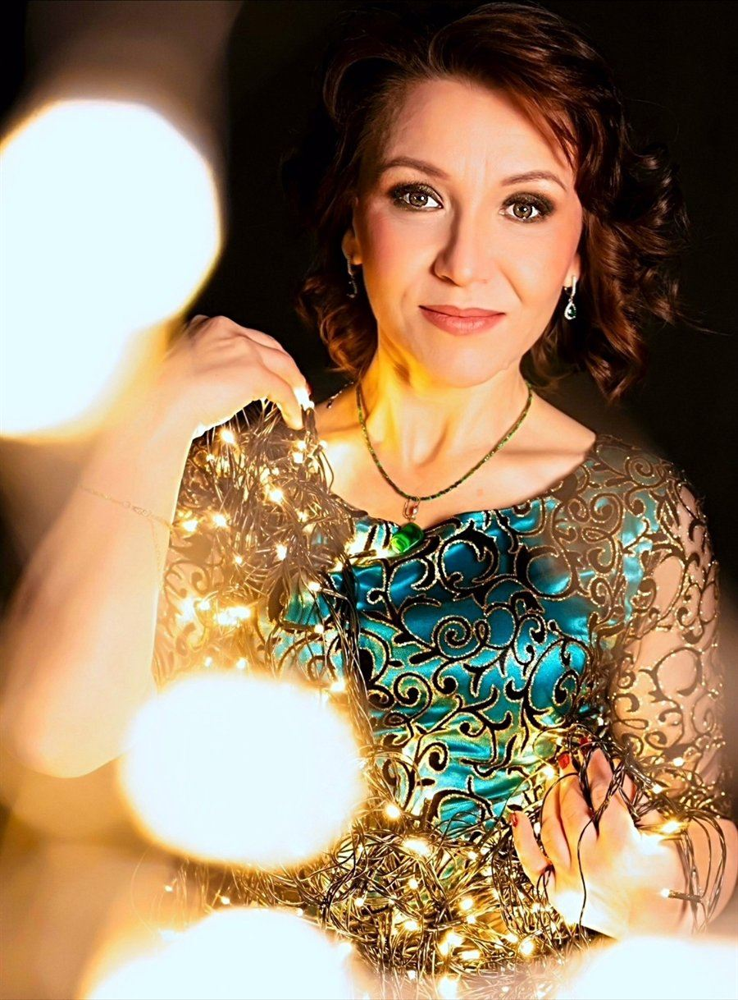
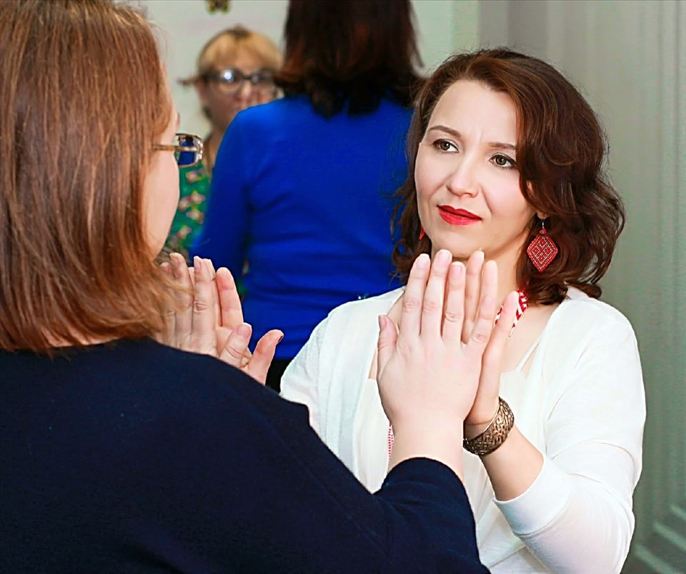
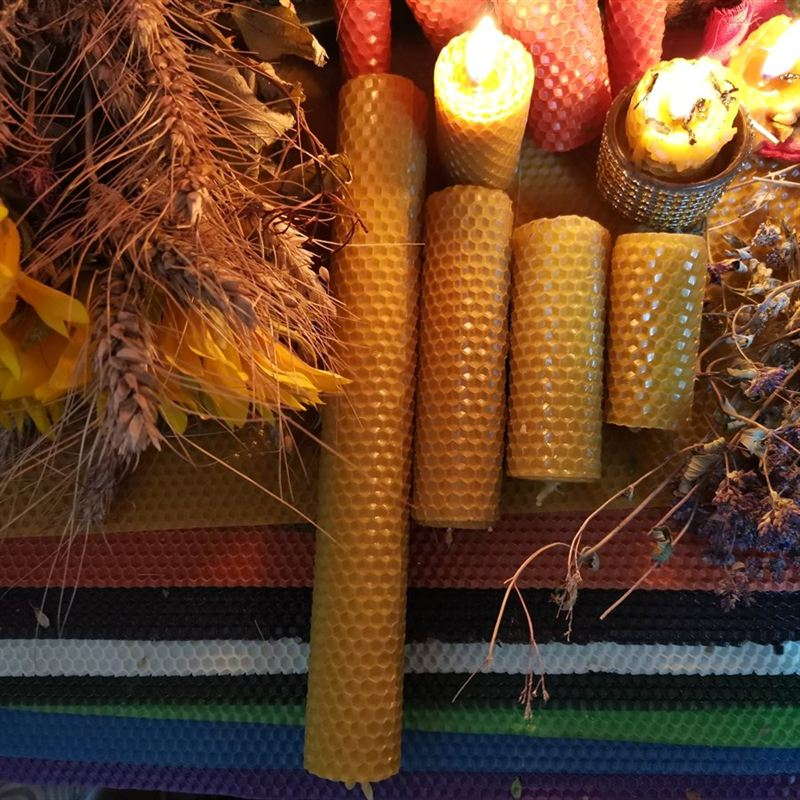
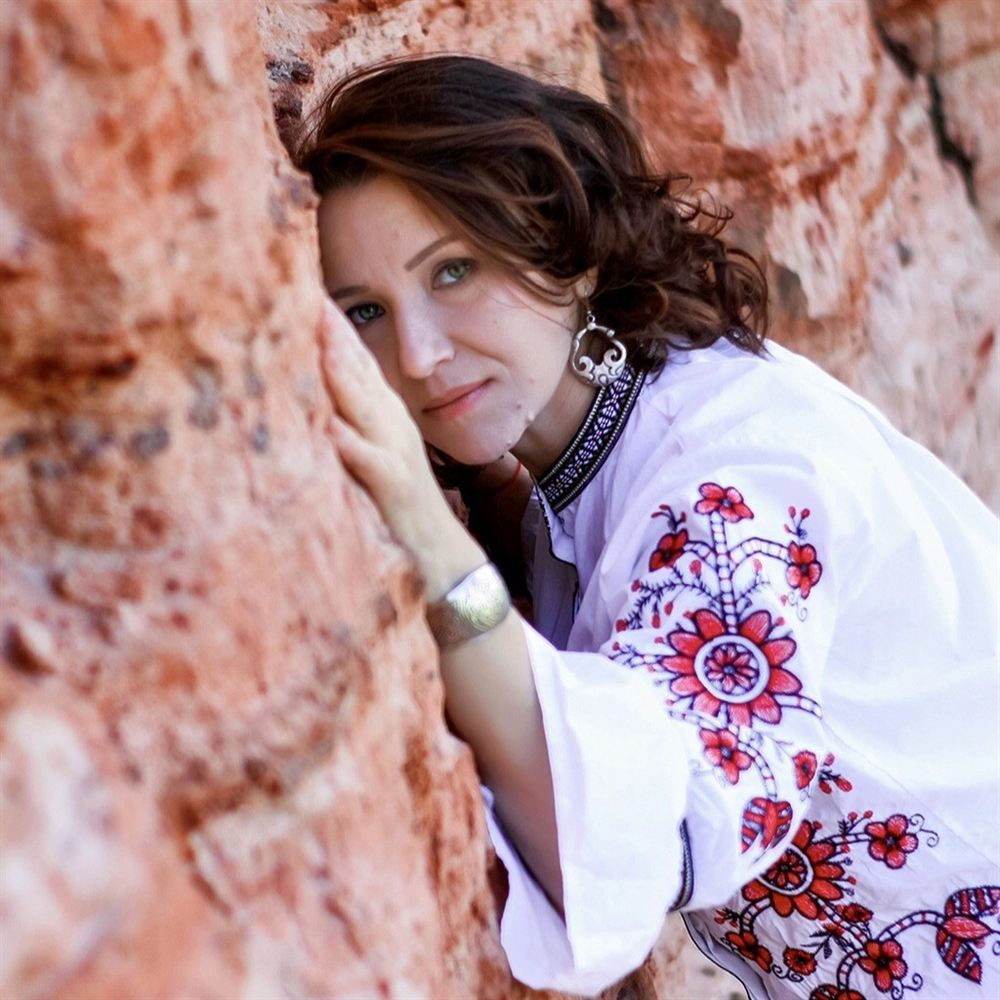

Главная · Обо мне
Обо мнеЮлия Леус
Психолог-практик с 1998 года
Помогаю распутывать жизненные узлы. Соединяю психологию и славянские традиции.
Родилась в солнечной Бурятии, живу в Петербурге.

Мой путь
Почти всё, чем я занимаюсь сегодня, выросло из вопросов, которые жизнь задавала мне самой.
Семья с многонациональными корнями
Я родилась в Бурятии. Во мне смешались русские, буряты, цыгане, украинцы, поляки и чехи. Роды мамы и папы конфликтовали, и я с детства спрашивала себя: почему в семье повторяются одни и те же сценарии и что можно сделать, чтобы было по-другому?
Первые большие вопросы
Вышла замуж и переехала в маленький военный городок, далеко от больших городов. Там я начала искать ответы: почему близкие люди становятся чужими, куда уходит любовь, как отличить её от привязанности и зависимости, как перестать быть жертвой.
Начало практики
Первая запись в моей трудовой книжке — психолог в детском саду. С этого года я консультирую и продолжаю учиться сама.
Учиться жить заново
Затяжной развод, одиночество, уход родителей, долги, съёмная квартира с двумя детьми-школьниками. Счастье мне пришлось буквально учиться строить. Этот опыт стал частью моей работы: я знаю, каково это — искать опору, когда кажется, что её нет.
Ресурсная психология
Начала практиковать ресурсный подход в психологии. Он и сегодня остаётся основой моей работы с людьми.
Онлайн-школа «Я — Развитие»
Открыла свою онлайн-школу. Разработала более 50 авторских курсов, а всего в школе прошло более 80 курсов.
Психология, традиции и творчество
Консультирую, веду школы ЯРГА и ВЕРЕС, создала авторскую колоду «Родовое Таро», пишу ресурсные картины, делаю свечи и обережных кукол, путешествую с клубом единомышленников.
О личной ценности каждого человека. О славянских практиках и мудрости предков.
Юлия Леус

Как я работаю
Мне интереснее всего работать с людьми, которые понимают, что в жизни что-то пора менять, и не ждут волшебной таблетки.
Чем я занимаюсь

Консультации
Отношения и семья, жизненные кризисы, самоопределение, поиск новых ориентиров.
Подробнее
Обучение
Онлайн-школа «Я — Развитие», школы ЯРГА и ВЕРЕС.
Подробнее
Творчество
Ресурсные картины, свечи с травами, куклы-обереги и колода «Родовое Таро».
Подробнее
Путешествия
Поездки клуба путешественников к местам, где живут природа и традиции.
ПодробнееЧто меня наполняет
Будем на связи
Напишите мне во ВКонтакте или загляните в обучение — выберите то, что откликается.